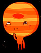
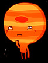
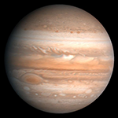
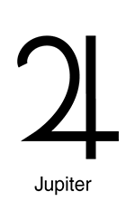

Юпитер
 Планета была известна людям с глубокой древности, что нашло своё отражение в мифологии и религиозных верованиях различных культур: месопотамской, вавилонской, греческой и других. Современное название Юпитера происходит от имени древнеримского верховного бога-громовержца.
{kind=link}
Ряд атмосферных явлений на Юпитере — такие, как штормы, молнии, полярные сияния, — имеют масштабы, на порядки превосходящие земные. Примечательным образованием в атмосфере является Большое красное пятно — гигантский шторм, известный с XVII века.  Юпитер имеет, по крайней мере, 67 спутников, самые крупные из которых — Ио, Европа, Ганимед и Каллисто — были открыты Галилео Галилеем в 1610 году.
{kind=link}
Исследования Юпитера проводятся при помощи наземных и орбитальных телескопов; с 1970-х годов к планете было отправлено 8 межпланетных аппаратов НАСА: «Пионеры», «Вояджеры», «Галилео» и другие.
Во время великих противостояний (одно из которых происходило в сентябре 2010 года) Юпитер виден невооружённым глазом как один из самых ярких объектов на ночном небосклоне после Луны и Венеры. Диск и спутники Юпитера являются популярными объектами наблюдения для астрономов-любителей , сделавших ряд открытий (например, кометы Шумейкеров-Леви, которая столкнулась с Юпитером в 1994 году, или исчезновения Южного экваториального пояса Юпитера в 2010 году).